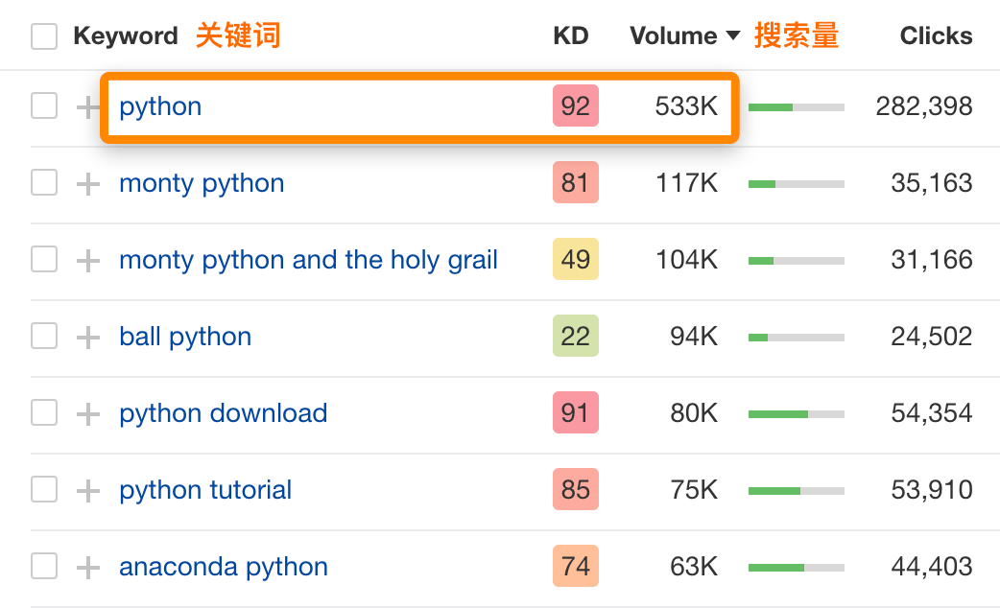
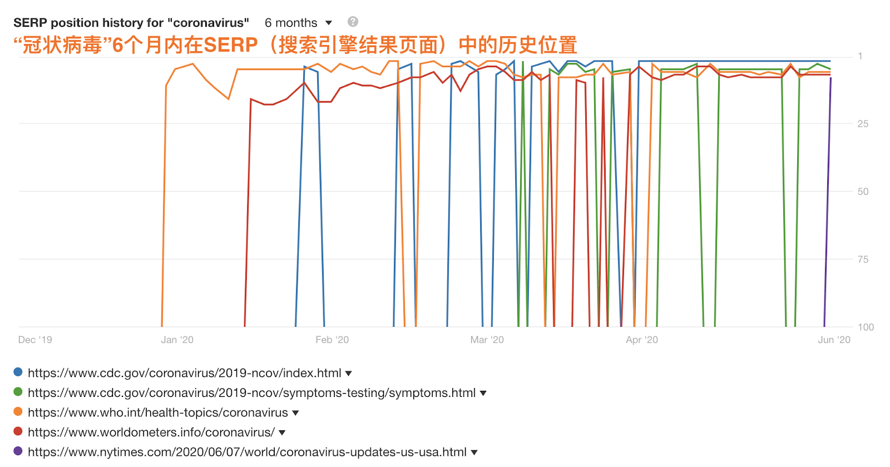
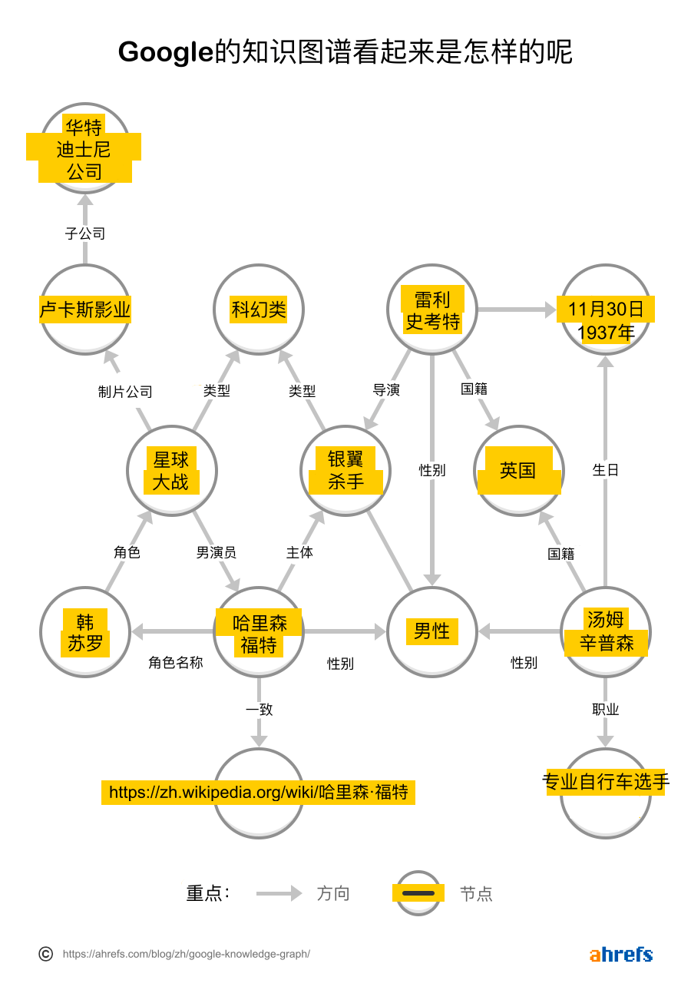
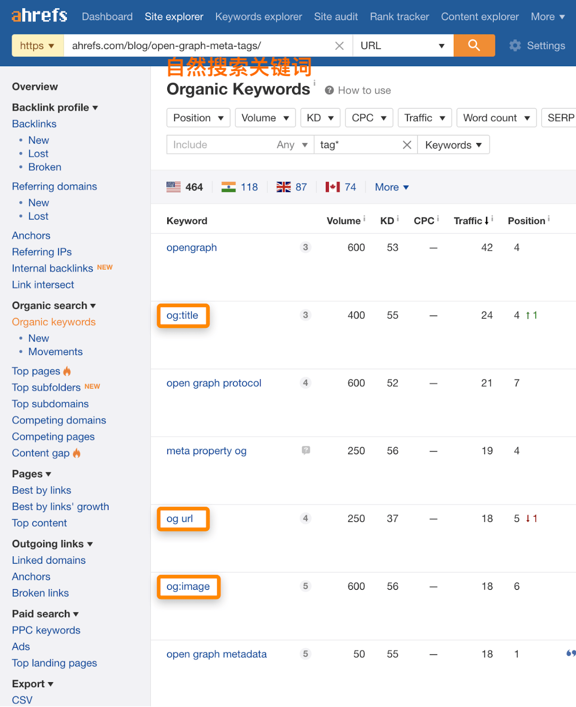

什么是语义搜索？它是如何影响SEO的¶
你有没有注意到，现在的谷歌几乎可以处理你向它抛出的任何问题？
就先看看这个查询结果：
尽管没有提及尤达的名字，但Google理解了我们在谈论谁，以及我们想了解的有关他的信息。
如果没有语义搜索，就不可能实现这一点。
在这篇文章中，你将学习到： - 什么是语义搜索 - 为什么说语义搜索很重要 - 在语义搜索中发挥作用的Google技术 - 如何调整你的SEO以适应语义搜索
什么是语义搜索？¶
语义搜索是现代搜索引擎用来返回最相关搜索结果的一种信息检索过程。它侧重于搜索查询背后的意图，而不是传统的关键词匹配。
该术语来自语言学的一个分支，称为语义学，它涉及对意图的研究。
为什么说语义搜索很重要？¶
尽管有无数的变量在起作用，但是语义搜索的原理，为什么需要它，以及它如何被影响，是很容易理解的。 - 用户使用的语言往往与所需内容不一样 - 很多搜索都在无意中产生歧义 - 了解词汇层级和实体关系的需要 - 反映个人兴趣和趋势的需要
用户使用的语言往往与所需内容不一样¶
更糟糕的是，我们有时甚至不知道如何正确表达我们想搜索的是什么。
比方说，你在电台里听到了一首陌生的歌曲。你喜欢它，于是开始在Google上随机搜索歌词，直到你终于找到它为止。
再增加一点复杂程度的话，将你在Google中输入的内容与对Siri，Alexa或Google智能助理的输入内容进行比较。 现在，关键字就变成了对话。
表达同一个想法的方式太多了，搜索引擎需要处理所有这些方式。 搜索引擎需要能够根据两者的意义，将其索引中的内容与你的搜索查询进行匹配。
无论这听起来多么具有挑战性，这仅仅是个开始。
很多搜索都在无意中产生歧义¶
大约40%的英语单词是多义词——它们有两个或更多的含义。这可以说是语义搜索要解决的最重大的挑战。
例如，仅在美国，关键词 “python “的月搜索量就有53.3万次：

如果我曾经搜索过 “python”，我很可能指的是编程语言。但科技行业以外的人很可能会想到真正的蟒蛇，或者是传奇的英国喜剧团。
这里的问题是，如果没有上下文，单词很少有明确的含义。在多义词的基础上，有无数的名词也可以同时是形容词，动词，或者两者兼而有之。而且我们还只是在谈论字面意思的范畴。如果我们深入研究其推论的话（譬如讽刺的时候），就会变得更加有趣。
在语义学中，语境就是一切，这将为我们引出了接下来的两点。
了解词汇层级和实体关系的需要¶
让我们来看看以下的搜索查询和热门搜索结果：
这确实非常厉害了。 以下是Google理解此查询必须要做的:
- 它要知道“伴侣 “是指妻子/女友/丈夫/男友/配偶。
- 了解到欧比王出现在多部电影和连续剧中，由不同的演员扮演。
- 建立联系。
- 以反映“欧比王”有歧义的方式来显示搜索结果。
我甚至无法想象，如果我在2010年或更早的时候做这个搜索，会得到什么样的搜索结果。
现在，让我们回过头来解释这些概念吧。
词汇层级 说明了单词之间的关系。 伴侣这个词对妻子，男友，配偶和其他词来说是上一级的（上位词）。
如前所述，我们的查询通常与所需内容的确切词组不匹配。 知道“负担得起”是介于便宜，中档和合理价格之间的任何事物，这一点至关重要。
在此示例中， 实体 是电影和连续剧中的角色（欧比王），具有特定工作的人（演员）以及与之相关联的人（伴侣）。 通常，实体是可以明确识别的对象或概念-通常是人，地点和事物。
如果所有的这些语言的复杂性还不够的话，我们还必须再深入一些。
反映个人兴趣和趋势的需要¶
让我们回到“python”的例子。如果我搜索这个词，确实会得到所有与编程语言相关的结果。
无论我们多么不喜欢任何使用我们个人数据的方式，至少这对搜索引擎来说是有用的。Google结合了有限的数据和你的搜索历史，以提供更准确和个性化的搜索结果。
我们都知道这一点。只要在搜索栏中输入任何类型的服务，你就会得到本地化的结果。
但更吸引人的是，谷歌能够根据动态变化的搜索意图临时调整搜索结果。
例如，冠状病毒不是一个新名词。 它一直是一组病毒的名称。 但众所周知，搜索意图在2020年初迅速改变。人们开始寻找有关特定冠状病毒（SARS-CoV‑2）的信息，因此必须对SERP进行相应的调整。

从上面 “冠状病毒 “的SERP历史位置中可以看到，目前排名前五的搜索结果中，没有一个是在2020年之前。
在圣诞节或黑色星期五等大型销售活动期间，你会在电子商务行业看到同样的情况。那段时间的搜索意图是具有高度交易性的，而人们通常可能更愿意看到相关的比较或评论。
Google不断推出算法更新和新技术，以进一步提高其理解自然语言和搜索意图的能力。
到2020年，语义搜索发展到今天的成果，一共经历了四个重要的里程碑。
知识图谱¶
Google的知识图谱于2012年发布，是实体及实体之间关系的知识库。
你可以想象它的样子大概是这样的-——但实际上有50亿个实体：

简而言之，这是一项启动并实现了从关键字匹配到语义匹配转变的技术。
向知识图谱提供信息的方法主要有两种：
- 结构化数据（稍后详述）
- 从文本中提取实体
对于第二点，搜索引擎需要理解自然语言。这时候，下面三个算法的更新就会发挥作用。
蜂鸟算法¶
早在2013年，Google推出了一个名为Hummingbird（蜂鸟）的搜索算法，以返回更好的搜索结果。 这个算法尤其有助于应对复杂的搜索查询。
蜂鸟算法是第一个重大更新，它更加强调搜索请求背后的意图，而非单个关键词。 它极速催化了“为话题而创作内容”的热潮，而不是“为单个关键词而写作”。
RankBrain算法¶
如果你曾经遇到过“潜在语义索引”或LSI关键词这一短语，可以忽略这个了。 Google用RankBrain算法解决了LSI产生的问题。
而我们前面已经讨论过这个问题。是关于搜索请求中所使用的语言和所需内容之间的不匹配。
Google的RankBrain采用了优于LSI的技术。通俗地说，通过使用复杂的机器学习算法，RankBrain甚至可以理解不熟悉的单词和短语的含义。
而考虑到15%的搜索请求都是新的，这可是一项巨大的工程。
我们可以认为RankBrain是蜂鸟算法的升级版，而不是一个独立的搜索算法。它是最强的排名信号之一，但你能主动为其做出的优化，也就只有满足搜索意图了。
BERT模型¶
基于Transformer的双向编码器表示（BERT）这一自然语言表示模型，是对语义搜索运作方式的最新的重大升级。自2019年底以来，它影响了大约10%的查询。
别担心，我也花了不少时间才仅仅记得住BERT代表什么。
你需要知道的是，BERT可以提高对长而复杂的句子以及查询的理解。它是一种处理歧义和细微差别的解决方案，因为它力图更好地理解单词的上下文。
虽然你并不能做什么事情来优化BERT本身，但简单地了解下它的含义和作用总是好的。
如何调整你的SEO以适应语义搜索¶
我已经在文章中抛出了不少提示和技巧。现在来点真正有实操性的。
1. 目标主题，而非关键词¶
在过去的SEO时代，你可以用关于同一主题的独立内容来获得高排名，但这里面定位的关键词会略有不同，如关键词:
- open graph tags
- open graph meta tags
- og meta tags
- open graph tag
- what is open graph
- facebook open graph tags
现在的情况已经不是这样了。Google现在明白，所有这些关键词搜索的意思都大同小异，并为所有这些搜索去排名基本相同的页面。
在创建内容时要牢记这一点。我们的目的不再是只为一个关键词排名，而是要深入地探讨一个主题，这样Google才会为你的页面排名很多类似的长尾关键词。
例如，我们关于Open Graph（开放图谱）元标签的文章在好几百个关键词中排名很好。其中很多是搜索同一事物的不同方式，但有些是 “og:title”、“og url “和 “og:image “这样的子话题。

我们之所以能够在这些关键词下获得排名，是因为我们写了一篇关于这个主题的深度文章，而不仅仅是关于一个关键词。
想知道可以写些什么子话题的话，这里有个不错的办法：在这份报告里找到这个话题下的热门页面。例如，假设您想写一篇有关种植芦笋的文章。 如果将“种植芦笋”的排名靠前页面放到Ahrefs的网站分析并查看其 自然搜索关键词 报告，就会看到这个页面在这些关键词下都获得了排名，其中包括：
- 芦笋需要种植多深
- 芦笋种植条件
- 什么时候种植芦笋
- 芦笋的最佳种植地
- 如何收割芦笋
- 如何护理芦笋
如果你想通过创作一篇深度的贴文来获取尽可能多的自然流量，那么所有这些子话题都会是你应该提及的。
不过要小心。 针对特定主题并不意味着你应该涵盖与该主题相关的所有内容，也不必太深入。
以本文为例。 我可以花十几个小时来研究自然语言处理模式并深入研究语义搜索的技术。 但我没有这么做，因为其实大多数人都不关心这个话题。
这就引出了下一点。
2. 评估搜索意图¶
你还是可以围绕某个主题来发布内容，即使这个主题是不符合搜索意图的。
假设你是一名营销数据极客，发现了“SEO报告”这个不错的话题。 自然地，你会希望分享制作最佳SEO报告所需要的东西。 因此，你会想到“利用搜索请求来创建最佳SEO报告”之类的内容。
确实，这可能是最终能造就最佳SEO报告的内容。 但是，大多数搜索此主题的人不熟悉许多Google表格功能。 他们只是想找到一些可以帮助他们完成工作的工具：
所以，在你开始勾勒新内容之前，先看看排名靠前的页面，推断主题的搜索意图。
推荐阅读： 搜索意图： 一个十分重要又经常被忽略的“排名要素”
3. 使用语义HTML¶
在我们还没法用上语义搜索的时候，我们不得已要转向语义网(Sematic Web)。 万维网（www）的原始概念可以解释为没有明确含义的、标准化的、互相链接的文档。 然而现在，显然我们需要“含义”。
这得从你的基本HTML开始说起。
我们先来比较以下的HTML元素：
语义HTML为代码增加了含义，因此机器可以识别导航模块，页眉，页脚，表格或视频。
HTML5则提供了最多的语义元素，大多数现代CMS主题都会使用这些元素。如果你还没有的话，通常一个插件就可以添加好。
但是语义HTML仍然非常有限。 虽然它有指示出来：“这是一个表格，这是一个页脚”，但它没办法实际内容的含义。这就是为什么我们需要把这些标记结构化（schema）。
4. 使用Scheme标记¶
Schema标记是标记你的网页的另一种方式。它也被称为结构化数据，可以说是网络的一个通用语义框架。
Schema.org.cn词汇表包含与属性相关联的数百种schema标记类型。 你可以使用这些来标记你的内容，让Google无需复杂的算法即可轻松理解。
例如，Google会更容易从这样的结构化内容中提取含义:
这比直接从原文中提取含义容易多了：
这样一来，当用户想知道做一块煎饼需要多长时间，或者它有多少卡路里时，Google可以以最佳的方式提供信息。
延伸阅读¶
5. 打造自己的品牌，成为知识图谱实体¶
这个标题不需要过多解释了，刚才我们已经讨论过实体，所以我建议你可以看一下这篇深入了解知识图谱的文章。
在所有关于调整你的SEO以适应语义搜索的技巧中，这个是最难实现的。因为这需要长期坚持品牌建设，并且同时运用其他所有技巧才能够做到。
6. 通过链接建立相关性¶
链接是历史上最早的相关性指标之一。 如果文档A链接到文档B，则它们就可能被视为相关。
在相关页面有使用自然锚文本的站内链接和站外链接都可以帮助Google弄清你的内容——甚至在处理内容之前。
延伸阅读¶
最后的思考¶
语义搜索已然改变了整个内容生态系统。用户可以获得更多相关的、有价值的内容，而这也促使了发布者撰写这样的内容。
虽然涉及到复杂的技术和算法，但语义搜索的原理很容易理解。现在，你应该准备好做出任何必要的改变，让你的SEO策略保持在前沿水平。
关于语义搜索，你还有什么问题或意见吗？请在Twitter上与我交流。
如果你想了解更多关于语义搜索的技术问题，请关注Dawn Anderson并查看她的演讲。
凡本网注明"来源：XXX "的文/图/视频等稿件，本网转载出于传递更多信息之目的，并不意味着赞同其观点或证实其内容的真实性。如涉及作品内容、版权和其它问题，请与本网联系，我们将在第一时间删除内容！
作者: Michal Pecánek, Ahrefs的营销专家和内容创作者
来源： https://ahrefs.com/blog/zh/semantic-search/